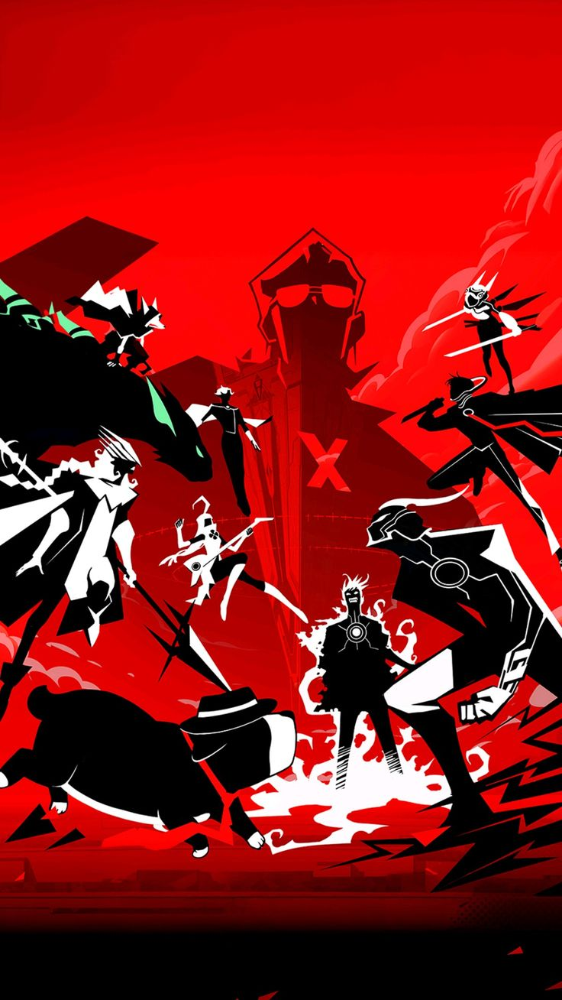
sinopsis: Tobe hero x es una serie que trata sobre las historias de los 10 heores principales de la asociacion de heroes hasta el momento
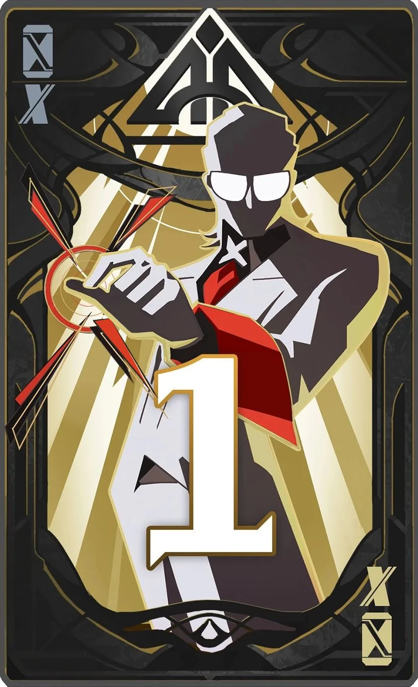
Heroe numero 1 nombre clave X tiene el poder de cambiar la dimension o realidad lleva tres años ocupando el pusto de heroe X (numero 1) nose conoce su origen, aparecio de la nada como "El mas fuerte"
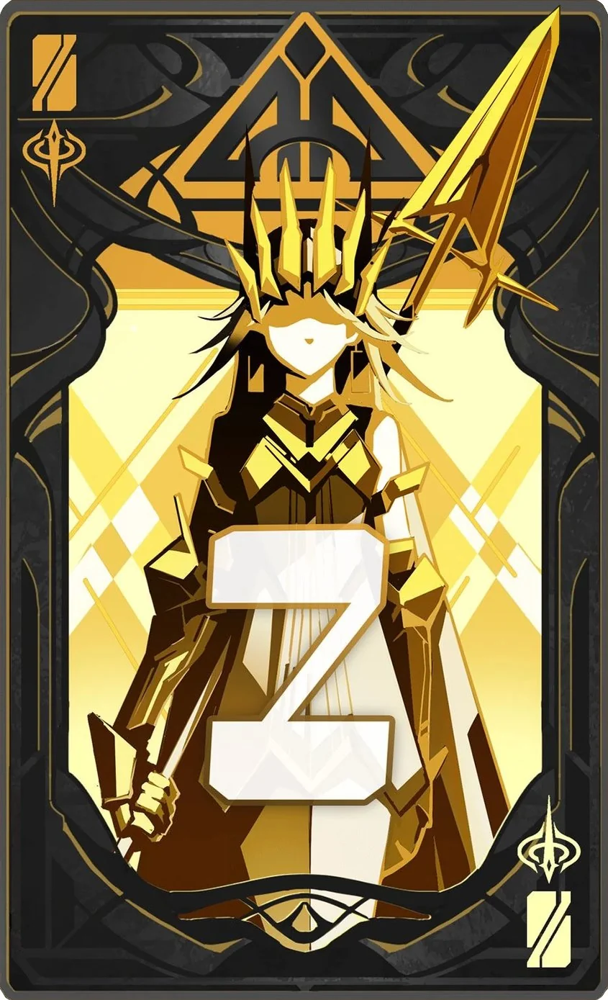
Heroina numero 2 nombre clave Queen tiene el poder de dar orden a y lo que ordene se vuelve una reglan dentro del area
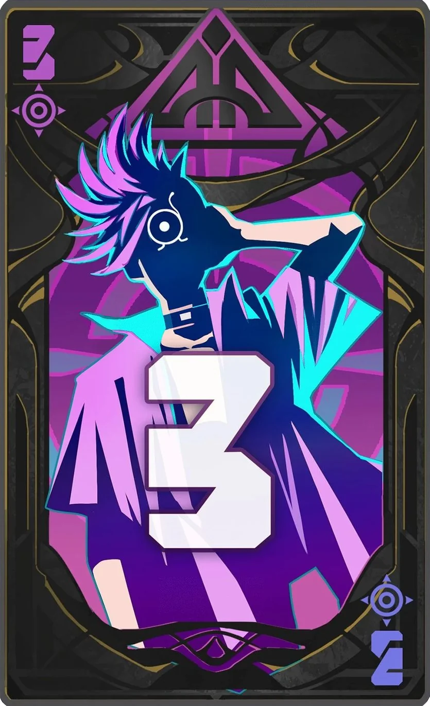
Heroe numero 3 Drago boy tiene la habilidad en la que el adquiere una forma con la cual su fueza y velocidad aumenta
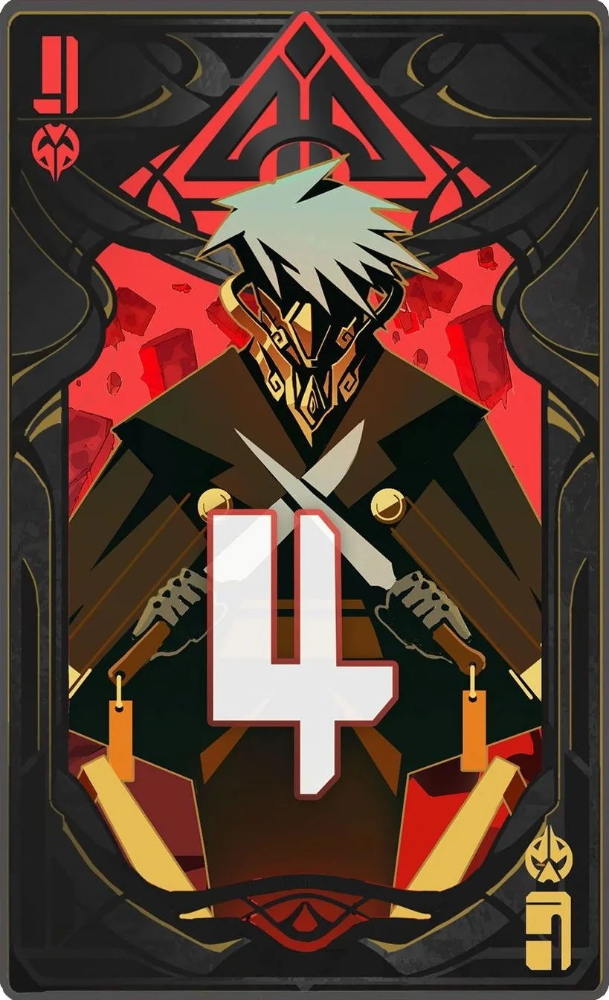
Heroe numero 4 nombre calve Goshtblade es un asesino imnato, no puede hablar y realiza muy poco ruido
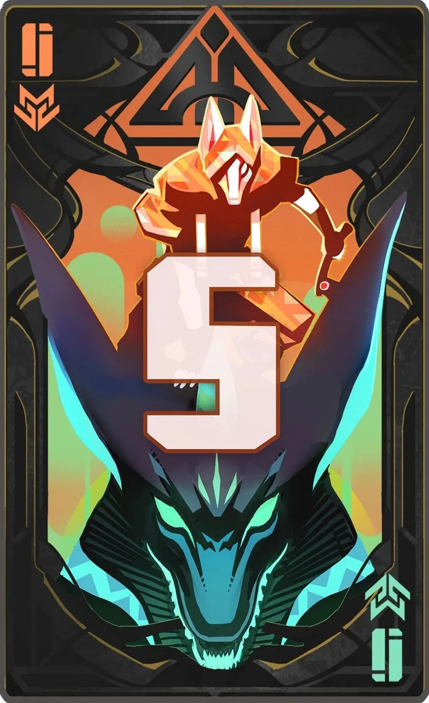
Heroes numero 5 nombre clave los Jonnies habilidad ellos son como hermanos y cuando se enojan liberan un poder moustroso capaz de rivalizar con los heroes X's
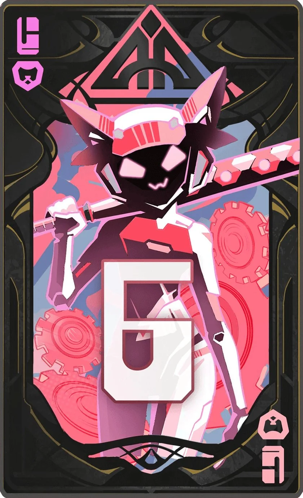
Heroina numero 6 nombre clave Loli habilidad ella ocupa una armadura para luchar ya que no posee habilidades especiales
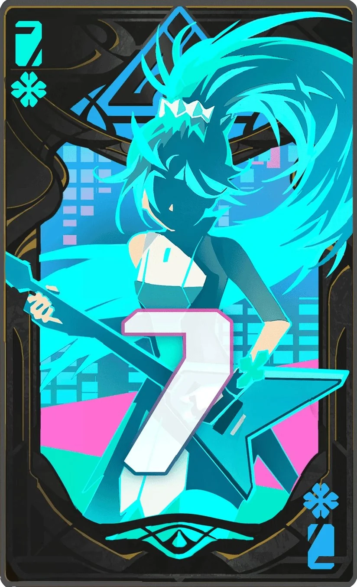
Heroina numero 7 nombre clave Lucky Cian habilidad ella tiene "suerte" su habilidad cuadriplica sus chances de que le salga algo bien o si alguien la toca eso esa "suerte" se le pasara
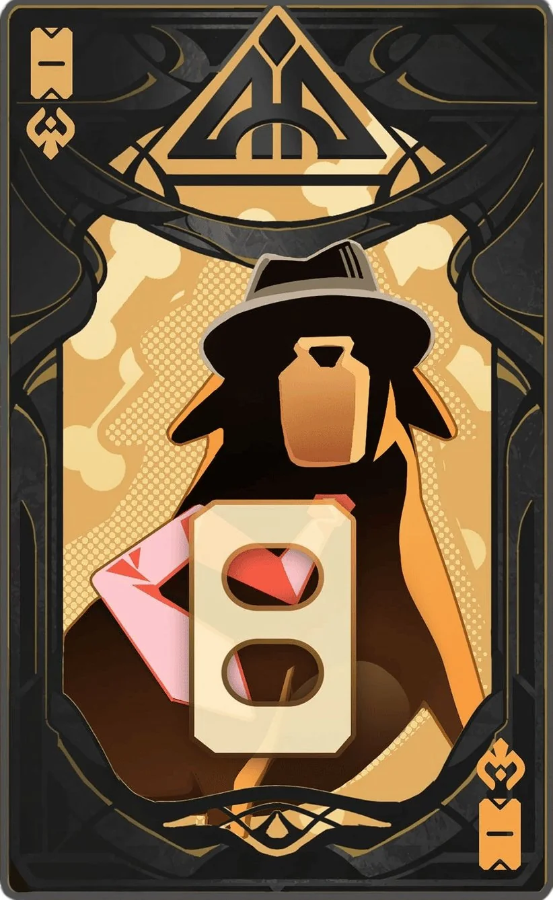
Heroe numero 8 nombre clave Ahu su habilidad es que es un perro que pueda hablar, es un detective con las habilidades de un perro y se puede hacer mas fuerte
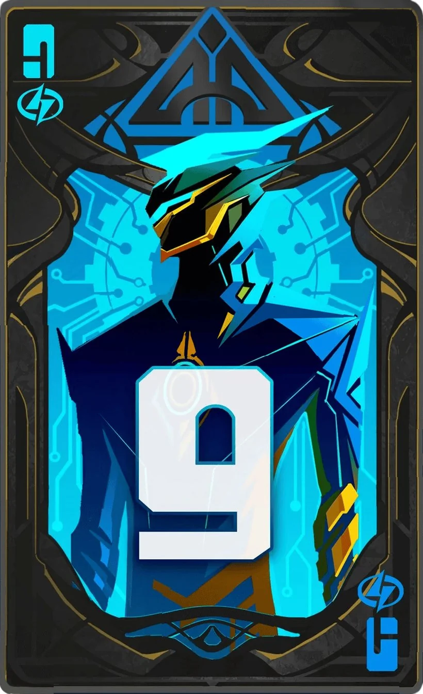
Heroe numero 9 nombre clave New-ESoul sus habilidades son las mismas que ESoul el primer heroe X y uno de los mas fuertes de la historia y el es su sucesor
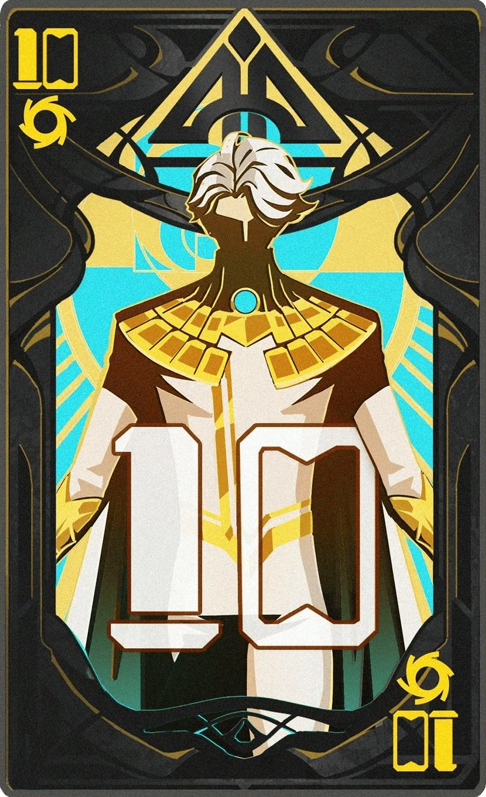
Heroe Numero 10 Nombre clave Nice o Ling-ling habilidad volar y super fuerza o resistencia el caso de el es especial el cual dos personas son una y una persona es dos